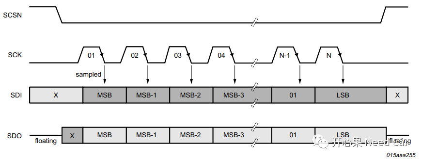
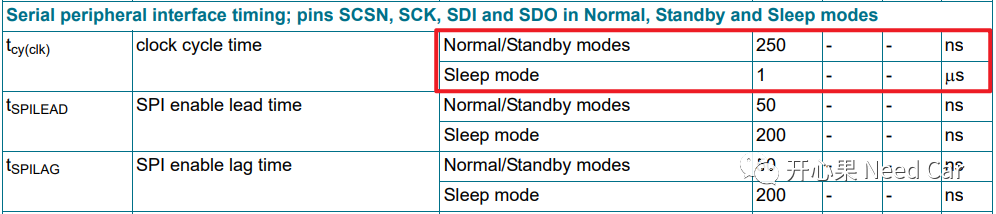
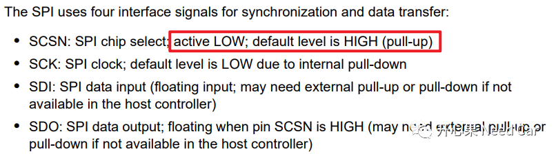
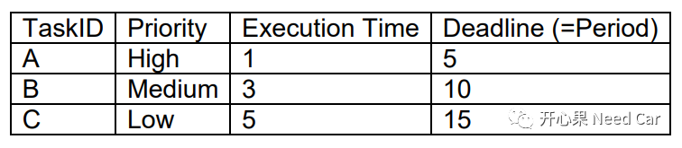
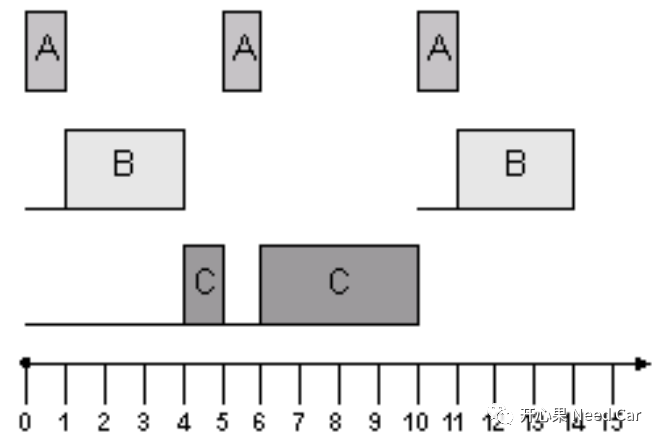
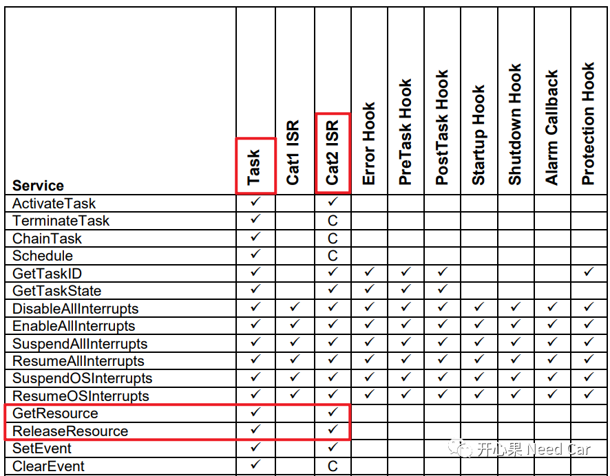

熟悉OS的朋友都知道，OS对共享资源的访问有相应的保护措施，比如：Spinlock、互斥量、天花板协议等。在嵌入式项目的开发中，对共享资源的保护很有必要，如果不能对共享数据的读/写操作进行有效的保护，那么，带来bug也只是时间的问题。
本文从一个实际工程问题出发，聊一聊不做共享资源保护，引起的Bug。
主芯片通过SPI指令，让TJA 1145 Transceiver(后面简称Trcv)进入目标Mode，实际结果：Trcv偶发不能进入目标Mode。
针对此问题，我们会进行理论分析，进行了如下假设：
Trcv极性或者相位配置错误；
Trcv设置的波特率不符合硬件要求；
Trcv与其他设备共用一个SPI模块，Trcv的片选(CS)未被使能；
- Trcv模式操作过程中（SPI指令正在执行），所在Task被中断打断，中断程序中，再次进行SPI操作时，发现SPI_BUSY，导致Trcv无法进入目标Mode；
- 不同任务(Task)均对同一个SPI操作，任务切换时，由于SPI所处状态非SPI_IDEL（前一个任务未释放SPI资源），导致后一个任务执行SPI指令时，Trcv无法进入目标Mode；
针对第1点，相对比较容易查。使用SPI，首先要查看从机的特性，根据其相位和极性配置主机的相位和极性，在其Datasheet中即可确认。查阅Trcv手册，可以看出Trcv的SCK，空闲时为低电平，且下降沿采样。

针对第2点，查手册能知道Trcv最高通信速率，Normal/Standby modes = 4Mbps，Sleep mode = 1Mbps。
针对第3点，可以通过示波器测量其SCSN电平，确定Trcv是否被激活。

前3个点相对比较容易排查，犯错的概率相对较低。对于本文提到的Bug，根本原因也确实不属于前三者。针对第4点，如果Trcv切换模式的操作在5ms的任务中，恰好在执行SPI命令的时候，有中断发生，任务会被迫挂起，去执行中断程序。而在中断程序中，发现SPI所处的状态是SPI_BUSY，导致中断中的SPI指令发送不成功，进而导致Trcv无法进入预期的Mode。
针对第4点的改进措施：执行SPI指令之前关闭中断，SPI指令执行之后打开中断，即建立临界保护区，确保重要任务不被打断，但是这种操作慎用。中断程序中最好不要对共享资源、全局数据进行操作。中断关闭时间过长可能会导致接收报文丢帧，发送报文周期延长。以CAN模块为例，由于硬件资源限制，底层可以缓存的报文数量有限，如果采用中断方式接收报文，当关闭中断时间过长，底层硬件缓存不了更多接收报文时，再来的CAN报文，底层将因无法缓存而丢帧。为什么发送报文的周期会延长呢？周期性报文放在周期任务里，周期任务的时间基准由STM或者GPT提供。比如：TaskA周期1ms，发送报文Message_A的周期是1ms，Message_A在TaskA中被发送，STM或者GPT每1ms产生一次中断，执行TaskA，但是中断关闭的时间过长，导致TaskA延期执行（＞1ms），进而TaskA中的Message_A发送被推迟。当然，中断例程执行的代码也不要太复杂，否则会耗费太长的时间。假设有三个Task:TaskA、TaskB、TaskC。TaskA和TaskC均会对SPI进行操作。TaskA、TaskB、TaskC的其他属性如下所示：

TaskA、TaskB、TaskC执行顺序如下所示。由于TaskC任务的优先级低于TaskA，在TaskC执行SPI发送指令的时候被TaskA抢占，之后在TaskA中执行SPI指令，由于SPI所处的状态是SPI_BUSY（资源被TaskC使用中，未释放），导致TaskA中，SPI的发送指令不能执行成功，进而导致Trcv无法进入期望的Mode。
针对第5种情况，可以在TaskC中使用天花板协议（ceiling protocol），在TaskC任务执行时，将TaskC的优先级提升到最高，这样TaskA将无法抢占TaskC，使得TaskA和TaskC的任务（本例的SPI指令）均可以执行成功。
即：在TaskC中使用GetResource()和ReleaseResource()。
开/关中断的操作，大家留意的话，可以发现，最后大都是如下的形式：
写的好看点，如下所示，本质还是挂起中断和使能中断。
xx_EnterCriticalArea_0(); xx_LeaveCriticalArea_0()
在有些工程中，追到最后，会发现__disable()、__enable()是一个汇编，比如：
#ifndef __disable#define __disable Ifx__disable#endif
#ifndef __enable#define __enable Ifx__enable#endif......
#define Ifx__disable() __asm__ volatile ("disable" : : : "memory")
#define Ifx__enable() __asm__ volatile ("enable" : : : "memory")
AUTOSAR_SWS_OS.pdf